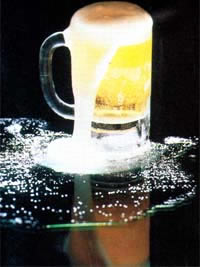

STAFF PHOTOS
CLOCKWISE FROM ABOVE: The various components belonging to the seven selected beer kits, which include Continental Products . . . Specialty Products . . . Wine and Brew hobby ... Bierhaus International . Duarte Imports . . The Brick Store . . . and Great Fermentations.